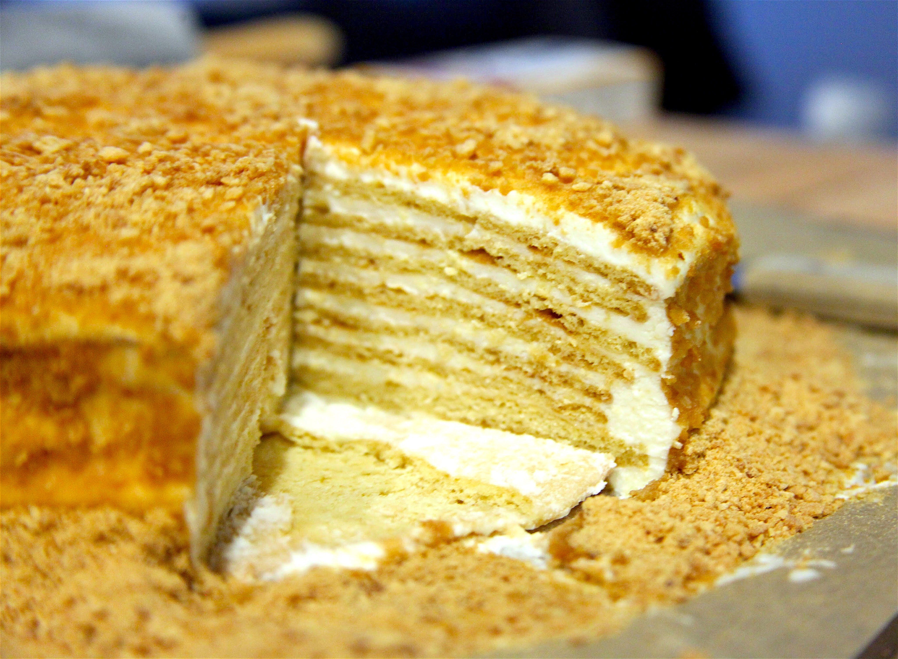

MEDOVIK
Thermomix version. Serves 12. Store in fridge wrapped.

INGREDIENTS
| Ingredient | Amount |
|---|---|
| Eggs | 3 (Large) |
| Caster Sugar | 200g |
| Unsalted Butter | 100g |
| Honey | 140g |
| Baking Soda | 1 Tsp |
| Plain Flour | Apr. 320-380g |
| Sour Cream | 625g |
| Icing Sugar | 160g |
| Heavy Whipping Cream | 250ml (Cold) |
EQUIPMENT
| Equipment |
|---|
| Thermomix |
| Thermomix Butterfly Whisk |
| Dough Mat |
METHOD
- Place the butterfly whisk in the Thermomix bowl and add 3 eggs and 200g caster sugar. Mix for 4 mins/37° C/speed 3.5. Transfer the egg mixture to a separate bowl.
- In a different (or the same cleaned-out) Thermomix bowl, add 100g butter and 80g honey. Mix for 4 mins/60° C/speed 2.
- Add the egg mixture into the Thermomix bowl. Mix for 30 secs/speed 3, then mix for 5 mins/90° C/speed 2. Add 1 tsp baking soda, then remove the cap from the Thermomix lid and mix for 15 mins/90° C/speed 2. Add 20g honey and mix for 5 mins/90° C/speed 2.
- Pre-heat the oven to 180° C fan forced. Transfer the mixture to another bowl. Stir in apr. 320g plain flour and keep adding more flour and stirring until the mixture becomes a non-sticky dough. Divide the dough into 8 even balls.
- Roll out a dough ball on a dough mat, dusting with flour as needed, until the dough is very thin (apr. 4mm or so). Cut the dough into a circle with a diameter of about 7.5cm and leave aside the trimmings as is (i.e., without combining them). This should be repeated for each dough ball, but the next step can be done at the same time.
- Bake each dough sheet for about 3-5 minutes, or until golden brown, in the oven. With the left-over trimmed dough, place them on a tray in small pieces and bake them in the oven. After the baking is done, you should have 8 baked layers and some baked trimmings.
- While the layers cool down, prepare the sour cream mixture by adding 625g sour cream, 160g icing sugar, and 40g honey into a clean Thermomix bowl. Mix for 30 secs/speed 3.5, then transfer to a large regular bowl.
- In a clean Thermomix bowl, insert the butterfly whisk and add 250ml whipping cream. Mix at speed 3.5 until stiff peaks form (apr. 30-60 seconds). Fold the whipping cream mixture into the sour cream mixture.
- To assemble the cake start with spreading about 1 tbsp of the sour cream mixture onto a large plate. Add one layer of the cake on top, pressing down slightly. Add 3 tbsp of the sour cream mixture, spreading out evenly across the layer. Repeatedly add another layer, pressing down slightly, along with 3 tbsp of the sour cream mixture until all layers have been added.
- Using the remaining sour cream mixture, along with the mixture on top and squeezing out the sides of the cake, spread the mixture around the sides of the cake. Either manually or using the Thermomix, crumble the baked trimmings into a breadcrumb-like state, then spread on top and along the sides of the cake.
- Finally, cover the cake and chill it in the refrigerator for at least 12 hours, but ideally over night.